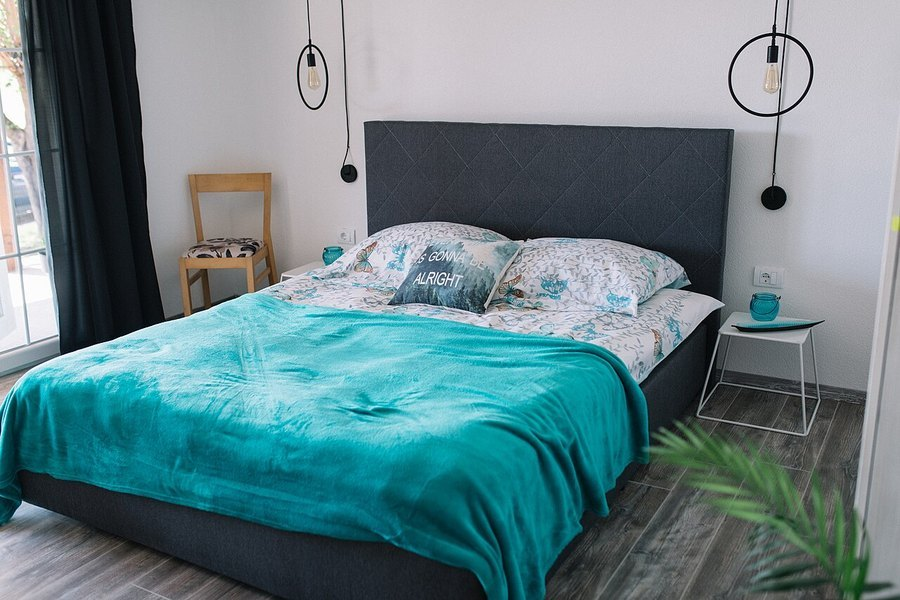

Smartphone Dependence and Memory: Is Your Phone Weakening Recall?
Heavy phone use tracks with more self-reported memory lapses in survey after survey. The more useful question is what, exactly, the phone is replacing.

Photo: Shixart1985 / Wikimedia Commons / CC BY 2.0
Key takeaways
- Cognitive offloading is real and well-studied. When people expect to be able to look information up again, they often remember where to find it rather than the fact itself.
- Divided attention is probably the bigger culprit than the device itself. Notifications fragment attention at exactly the moment new information needs to be encoded.
- Heavy smartphone use correlates with more self-reported memory complaints, but self-report studies can't separate the phone from the anxiety or poor sleep that often travels with it.
- There's no solid evidence that phones structurally damage memory circuits the way the "digital dementia" headlines sometimes imply.
- Small, specific habits, like trying to recall before you look something up, target the actual mechanism rather than the device.
It's become a common complaint: does my phone actually make my memory worse? Not in the sense of damaging your brain. What the research does support is narrower and, honestly, more useful: heavy phone use changes how you pay attention and how much practice you give your own memory, and both of those things genuinely affect recall.
What is cognitive offloading, and does it really weaken memory?
A well-known line of research, sometimes called the "Google effect," found that when people expect information to remain available for later lookup, they tend to remember less about the fact itself and more about where to retrieve it again. That's not a flaw in the brain. It's a sensible way to allocate limited mental effort when storage is cheap and always in your pocket.
The catch is that this offloading becomes a habit that extends past the moments where it actually helps. Phone numbers, addresses, appointment details, even the thread of a conversation, all can get waved off to "I'll just look it up," and over time that reduces the ordinary practice of holding information in mind that used to happen automatically. Memory, like most skills, gets weaker with less use, not because it's being damaged, but because it's being exercised less.
COMPLEX
The memory formula we rate highest in 2026
One formula combined a fully transparent, clinically-dosed label: citicoline, bacopa, phosphatidylserine and B-vitamins, with a 60-day guarantee.
See Today's Price →Does divided attention from notifications hurt memory formation?
This part of the story has decades of basic memory research behind it, long before smartphones existed. New information only gets encoded well when attention is actually on it. Split that attention, say, by glancing at a notification mid-conversation, and encoding suffers measurably, even if the glance lasts two seconds. A phone buzzing nearby doesn't have to be picked up to pull on attention; several studies on "continuous partial attention" have found that just anticipating an interruption is enough to degrade performance on focus-heavy tasks.
Stack enough of these small interruptions across a day, and the cumulative effect on what actually gets remembered can be larger than any single lookup or notification would suggest. This overlaps with the territory covered in our piece on multitasking and the brain, since task-switching and phone-driven interruption rely on much the same attentional bottleneck.
Is this really about the phone, or about what it's replacing?
Worth asking directly. Heavy phone use late at night is one of the more consistent ways people cut into their own sleep, and sleep is where a large share of memory consolidation happens; see our piece on sleep and memory consolidation for that side of it. People who report feeling dependent on their phones also tend to report more anxiety and more subjective memory complaints generally, and anxiety on its own is a documented drag on working memory and concentration. None of that proves the phone is innocent, but it does mean a chunk of what gets blamed on "my phone is ruining my memory" may really be "my sleep and my attention are worse, and the phone is involved in both."
What can you actually do about it?
Target the mechanism, not the gadget. Try recalling a name, a fact, or where you left your keys before reaching for your phone to check; that brief retrieval attempt, known in memory research as the testing effect, strengthens recall more than passively reading an answer. Keep the phone out of reach during conversations and study sessions so attention isn't split at the moment something needs to be encoded. Turn off non-essential notifications rather than relying on willpower to ignore them, and keep the phone out of the bedroom if late-night use is cutting into sleep.
These are small changes, not a digital detox, and they line up with the broader habits in our guide on how to improve your memory. If you want to build the retrieval habit further, our piece on active recall covers the same underlying principle in a study context.
Frequently asked questions
Is my phone shrinking my brain or damaging my memory?
There's no solid evidence that normal smartphone use structurally damages the brain or permanently weakens memory. What's better supported is that heavy use changes habits, like divided attention and less practice at recalling things unaided, that do affect how well new information sticks.
Why can't I remember something I just looked up on my phone?
This matches a well-studied pattern sometimes called cognitive offloading or the Google effect. When people expect information to stay retrievable, they often encode where to find it again rather than the fact itself, so recall for the content can be weaker even though the search felt effortless.
Does screen time cause dementia?
That hasn't been shown. Most of the research on phone use and memory looks at everyday attention and recall in younger and middle-aged adults, not long-term dementia risk, and the two shouldn't be conflated.
What's one simple change that actually helps?
Try to recall a fact, a name, or where you put something before reaching for your phone to check. That brief retrieval attempt, sometimes called the testing effect, strengthens memory more than passively reading the answer, even if you end up looking it up anyway.
Support your memory from more than one angle
Habits are the foundation. See the memory formulas our editors rate highest for 2026 for the nutritional side of the picture.
See the Top 5 Memory Formulas →Related: Multitasking and the brain · Active recall · How to improve your memory · Best memory formulas of 2026